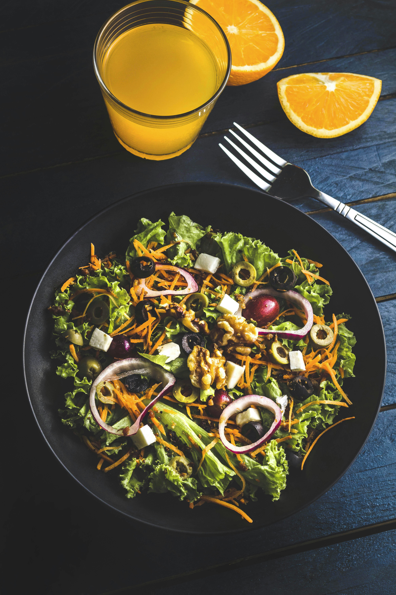

West Africa
Discover the bold flavors of pepper and palm oil in West African cuisine.
Learn MoreA Culinary Journey Through Africa's Rich Food Heritage
Discover the rich and diverse culinary traditions of the African continent



Discover the bold flavors of pepper and palm oil in West African cuisine.
Learn MoreExperience the unique blend of spices and coconut in East African dishes.
Learn MoreExplore the aromatic world of couscous and tagines.
Learn MoreAfrican chefs are revolutionizing global cuisine by blending traditional techniques with modern innovation. From Jollof Rice sushi to Injera tacos, discover how African flavors are reshaping the culinary landscape.
Traditional African cooking methods are gaining recognition for their sustainability. Learn how ancient techniques like fermentation, solar cooking, and zero-waste practices are making a comeback in modern kitchens.
Discover the nutritional powerhouses of African cuisine: Moringa, Baobab, and Teff are taking the health food world by storm. These ancient ingredients are now being recognized for their exceptional nutritional value and versatility.